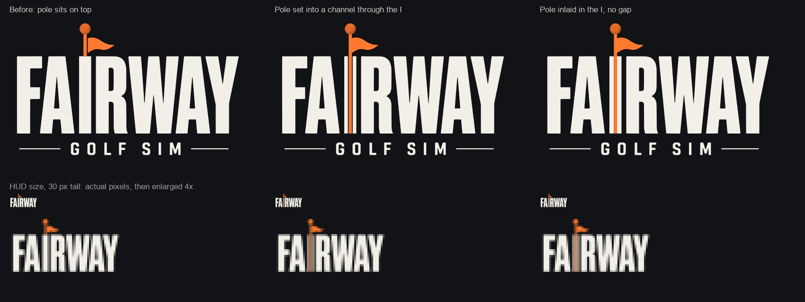
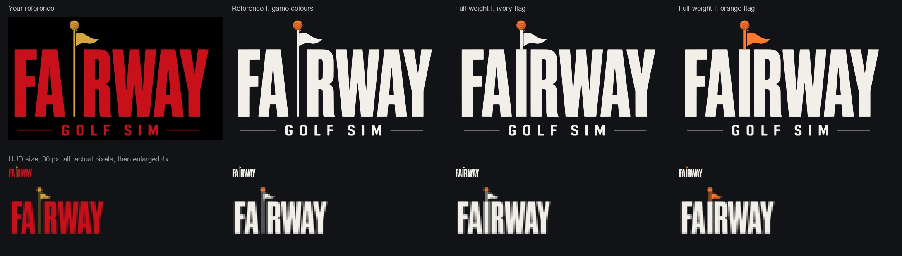
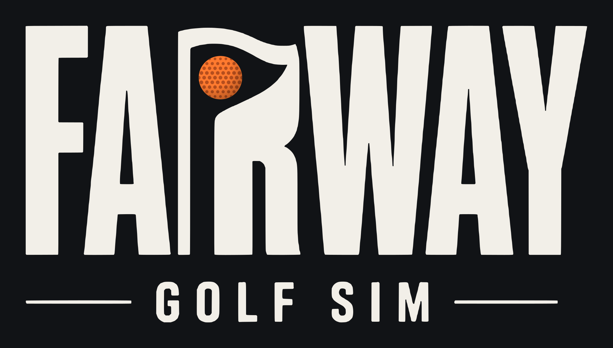
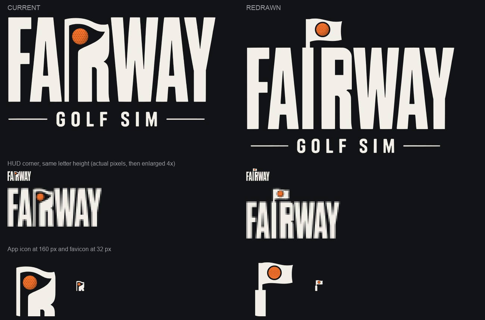
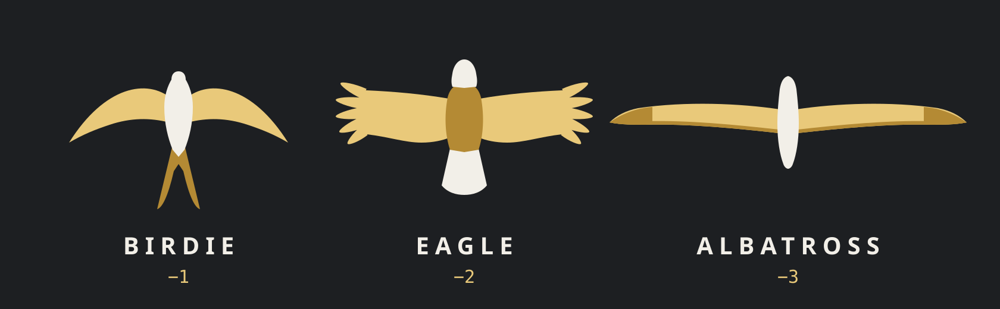

Fairway branding board
Five logo directions and the devil character, each shown the same way: the logo, the logo with the character, the character alone, two real game frames, small sizes, and 3D. Below that is a motion lab with idle, swing and hole-out tests. This board makes no recommendation. Every style gets the same treatment so you can compare them.
The flagstick I, made to read as an I
The letters are your reference's own outlines, traced, with only the colour changed. R, W, A and Y move 16 px right to make room. The thin flagstick is the whole I in the reference, so at small sizes it drops out and leaves "FA RWAY". The fix is a full-weight I, as thick as the other letters, with a slim pole rising from it to carry the pennant and the ball. The ball sits on top where the dot would be. It's orange like your ball in play, and turns gold on a hole-out.

Earlier comparison: your reference and the first full-I versions

This is the version now in the game: the HUD corner, the launch drop-in, the rolling loader, the gold hole-out and the waving flag. The flagstick I is the app icon. tools/brand/build-wordmark.py rebuilds every asset.
Set into a channel (recommended). The orange pole runs the full height: out of the top to the ball, down through the middle of the I, and it stops flush with the I's foot. A thin dark gap either side makes it read as a pin set into the letter rather than paint on it. The ivory either side keeps the I as heavy as the other letters, so it still reads as FAIRWAY. At HUD size the I takes on a slight orange tint but keeps its full width.
Inlaid with no gap. It's simpler, but the orange and ivory meet edge to edge, which reads more like a stripe painted on the letter.
Everything animates as planned: the pennant unfurls and waves, the ball drops onto the top of the pole, and on a hole-out the ball turns gold.
FAIRWAY, not FARWAY
In the traced wordmark the I is a thin flagpole whose flag flows into the R, so the I, flag and R read as one shape. Small, it reads as "FARWAY". In the redraw the I is a full-weight stem, the same as the F. The flag flies above the cap line on a pole planted in the I, clear of the R, which gets its own top back. The ball still sits in the flag, and the drop-in, roll and gold animations work the same way.



The redraw is taller, because the flag sits above the letters, so the HUD corner needs about 34 px of height instead of 26 to keep the same letter size. The I and R are now plain letters, so the logo is less of a single fused shape. That loses some originality but gains a word anyone reads at a glance. The new app icon is a flag on the top of the I. It's simpler than the current one and holds up at favicon size.
The wordmark alone, the animated ball, and the scoring birds
These follow your question about what would suit the game better than the cartoon devil. They use the game's own interface colours: graphite #111316, ivory text #f2efe8, signal orange #ff7a2f, and achievement gold #e9c97a.
1 · High Tone, wordmark only, in five colourways
Keep it. The High Tone wordmark is the strongest thing on this board. It needs no mascot: the flag cut into the I and the ball in its counter already carry the golf story. It also gives you a ready-made app icon (the flag-I on its own, shown under each colourway).
Change the colour to ivory with an orange ball. Ivory is exactly the game's text colour, so the logo sits in the interface as if it belongs there. The orange ball is the same orange as your ball, tracer and tee markers in play, so the logo's ball is the player's ball. When you hole out, it turns achievement gold (see the hole-out test below). The reference red collides with the penalty red. An all-orange wordmark spends the accent on decoration when it should mark the one thing to act on. Graphite on ivory is the version for light backgrounds: print, merch and the App Store.
Two things to settle before shipping. First, below about 120 px wide, use the flag-I icon instead of the full wordmark. Second, the traced letters came from your reference image. If that image was made with the commercial High Tone typeface, license it for logo use.
2 · The animated High Tone ball
3 · The scoring birds: birdie, eagle, albatross

A swallow, a bald eagle and an albatross, each drawn from below in flight and recognisable by wing shape alone. The span grows with the score: 180, 236 and 300 units. Bodies are ivory and wings are achievement gold, so a bird always means you earned something. Each one flies in its own way: the swallow darts with fast beats, the eagle takes a few heavy strokes and then soars, and the albatross barely moves its wings and banks.
The birds are on hold. They only go into the game as real, rigged, animated 3D bird assets that match the course realism, flying over the green on a birdie, eagle or albatross. These vector drafts stay here as a record of the idea. The game now uses the flagstick wordmark (an orange pole set through the I) in the HUD corner and on the launch and loading screens; it turns gold on a birdie or better, and the flagstick I is the app icon.
The five styles
On narrow screens the table scrolls sideways and the row labels stay pinned. Every image here is a file in docs/branding/.
Animation tests
This is a cut-out puppet made from the vector trace: tail, legs, torso, head, club, fists and eyelids, each on its own pivot. The art is the same paths as the logo version, so the character looks identical at rest. Choose a style for the ground and banner type, or put it over a real game frame.
Idle loop: breathing, a head bob, a tail sway, a club waggle and blinks every few seconds.
The devil as a 3D model
The mesh was generated in Blender from the trace and has 23k faces. It ships as an 864 KB GLB, or 844 KB with Draco. It's one rigid piece with no skeleton, so these tests move the whole body: a breathing idle, a celebration hop, and a turntable that shows the side and back. A real 3D swing would need a rig.
Loading the model…
Using these in the game
These are observations, not a ranking. Each row is one concern, with each style's answer next to it.
- Typefaces
- Airone, Therilo, Brison, Los Amigos and High Tone are commercial typefaces. The lettering here is outlined from open-licence stand-ins: Anton, Montserrat Black, Alfa Slab One, Big Shoulders Display and Oswald. Style 3 is the exception: it is traced directly from your reference image, so those letterforms are exactly yours. To switch to the named fonts you would need a licence covering logo use, and I would swap the outlines; the layouts would stay the same.
- The character
- The 2D trace matches the reference stroke for stroke. In the original the feet are hidden behind the letters, so the standalone version cuts them flat and stands on a contact shadow. Rubber-hose devil mascots are common in sports teams and food brands, so a trademark search is worth doing before release.
- Tone
- The game's direction is realistic and premium, and the character is a 1930s cartoon. Nothing on the course would change. The character would only appear in menus, loading screens and moments. Whether that contrast reads as personality or as a clash is the main question this board leaves open.
- Motion references
- Timing follows the motion tokens already in
docs/RESEARCH_UPGRADES.md, which came from the earlier design-repo research. That means fast-in, soft-out entrances (expo.out); a 0.06 s word stagger on banners, matchingjs/ui/moments.js; transform and opacity only; gold reserved for achievements; and a reduced-motion fallback that shows the end pose without movement.
What was made
svg/<style>-logo.svg: the logo on its ground (1600 × 1000)svg/<style>-mark.svg: the same logo on a transparent ground, for overlayssvg/<style>-logo-character.svg: the logo with the devil standing on the wordmarksvg/<style>-character.svg: the devil alone on the style's groundsvg/devil.svg: the transparent character master;svg/devil-puppet.svg: the layered puppet used in the lab3d/<style>-logo.glb: the extruded logos (Draco);3d/devil.glb(Draco),3d/devil-web.glb, and3d/devil-web.glb.js(the same model as base64, for the web page)renders/: Blender renders of every 3D logo, with and without the character